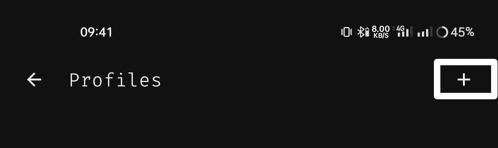

Penting: Aplikasi ini tidak diunduh dari Play Store. Selalu ada risiko saat menginstal aplikasi dari luar. Harap dipahami dan gunakan dengan bijak.
Langkah Awal: Persiapan
Sebelum memulai, ada dua hal yang wajib kamu siapkan:
-
Unduh Aplikasi Clash Meta (CMFA)
Ini adalah aplikasi utama yang akan kita gunakan. Klik tombol di bawah untuk mengunduh versi terbaru.
Unduh Clash Meta (APK) -
Unduh File Konfigurasi Terbaru
Tombol di bawah ini akan selalu menunjuk ke file konfigurasi paling baru secara otomatis.
Mencari file terbaru...
Cara Penggunaan
Setelah kedua file di atas siap, ikuti langkah-langkah berikut dengan teliti.
1. Impor Profil Konfigurasi
Langkah pertama adalah memasukkan file clash.yaml ke dalam aplikasi.
- Buka aplikasi Clash Meta yang sudah kamu install.
- Di halaman utama, cari dan ketuk menu "Profile" atau "Profil" (biasanya di bagian bawah).
- Di halaman Profil, ketuk ikon tambah (+) di pojok kanan atas. 
- Pilih opsi "Import from File" atau "Impor dari Berkas".
- Isi bagian Name sesuai keinginan anda kemudian klik bagian Browse Files untuk melanjutkan.
- Klik titik 3 disamping Configuration.yaml kemudian klik ⬇️ Import dibawah.
- Jika dibagian Recent/Terbaru tidak ada file seperti
clash_20251020_095319.yamlmaka klik tombol garis 3 dipojok kiri atas lalu klik bagian Download. - Cari dan pilih file
clash_20251020_095319.yamlyang sudah kamu unduh tadi. - Klik tombol kembali dipojok kiri, lalu klik tombol Save dipojok kanan atas untuk menyimpan konfigurasinya.
- Di halaman Profiles klik satu kali konfigurasi yang baru saja dibuat untuk mengaktifkannya, setelah konfigurasi aktif/dipilih (ditandai dengan bulatan warna biru) klik tombol kembali dipojok kiri atas untuk kembali ke halaman utama.

Jika berhasil, kamu akan melihat profil baru muncul di daftar.
2. Mulai Koneksi dan Tes Ping
Setelah profil siap, saatnya menghubungkan dan memastikan semuanya berjalan.
- Tekan tombol yang ditandai seperti gambar dibawah untuk menjalankan aplikasi Clash Meta for Android .
- Aplikasi akan meminta izin untuk membuat koneksi VPN. Pertama ceklis bagian Don't ask again/Jangan tanya lagi agar tidak meminta perizinan setiap kali aplikasi dijalankan, lalu pilih "Allow" atau "Izinkan".
- Jika tombol berubah menjadi "Running" atau "Berjalan", selamat, kamu sudah terhubung! Selanjutnya klik bagian Proxy untuk memastikan semuanya berjalan secara otomatis.
- Setelah terbuka ketuk ikon petir (⚡) untuk menjalankan tes ping. Jika muncul angka (misalnya: 250,111), berarti koneksi internet sudah berjalan dan anda tinggal menggunakannya seperti biasa, pastikan yang aktif/dipilih di halaman üíé ZHStore adalah üöÄ BEST-PING.
Tips Tambahan
- Memperbarui Konfigurasi: Jika ada pembaruan file
clash.yaml, kamu bisa mengunduhnya lagi, lalu di halaman "Profiles", geser profil lama ke kiri dan hapus. Setelah itu, impor lagi file yang baru. - Koneksi Lambat? Di tab "Proxy", kamu bisa memilih server/grup server yang berbeda jika tersedia. Coba jalankan tes ping untuk melihat mana yang paling cepat.
- Tidak Terhubung? Pastikan kamu sudah memberikan semua izin yang diminta aplikasi dan kuota yang sesuai masih aktif.